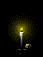

FILM
Kurt blir grusom (2008)
uironisk starten på en norsk storhetstid- en kurturell milestein
denne filmen er som hvis George Orwell fikk barn med Terkel fra Terkel i knipe
jeg vil faktisk påstå at den er bedre enn Animal Farm og leverer den politiske beskjeden på en artigere og mer forståelig måte, så ja Geroge Orwell rull deg i grava.
50/50 millioner kroner
*
The man who saves the world (1982) AKA Turkish Star Wars
Dette er en tyrkisk take på den populære filmserien Star Wars, som jeg ærlig talt syns er litt kjedelig, dessuten er den full av vestlig propaganda og ideer som ikke henger i tråd med islam og det kan jeg bare ikke stelle meg bak. vanlige star wars har et kritisk mangel på sykt koreograferte fight scener med skjorteløse fyrer som rir på hest og kaster sverd på hverandre, og det er ikke rart man sovner under sånne tilstander
The man who saves the world er laget med resirkulerte (stjålne) klipp fra star wars og har på en rar måte gjort det bedre? jada den har et lite problem med tempo, men grunn ideen er solid, denne filmen har gitt meg mange timer med underholdning, jeg har selv sett denne filmen totalt kanskje 4 ganger uten å bli helt klok på den - mest fordi jeg bare har satt den på i overstadig rus, men jeg lover at det er helt utmerket hjernegodteri nåt du setter det på i rett stand, jeg kan jo ikke tyrkisk så jeg velger ofte å se den med noe musikk istedet for film audio, noe svartmetall eller egentlig hva som helst.
8/10 trollmenn bekjempet
*
Sønner av norge (2011)
Jeg blir kvalm av denne filmen
ta en bit av mamma nå/i en sofa fra ikea...
*
BØKER
Narcissus & Gullemunn (1930) Demian (1919) - Hermann Hesse
To av de beste verkene av homoerotisk filosofisk skjønnlitteratur noen sinne?
var de homo? med moderne briller er det lett å syns at de virker litt homo, men det var jo en annen tid, kanskje de bare ikke tenkte på det på den måten...? det er hvertfall en ubenektelig "bromance" på gang her i disse to romanene, men heiheihei har du tenkt på enda at de passer formen på en veldig typisk arketypene innenfor pop media, som polpulære og velkjente (og vel respekterte) homsepar som svampebob og bleke, eller naruto og sasuke, lys og mørke, dag og natt, sol og måne, liv og død, ja og nei...?
sånn her er hvordan det funker:
Gullemunn - Sinclair - Svampebob - Naruto
Narsissus - Demian - Bleke - Sasuke
gjerne gi beskjed hvis jeg har glemt noen.
*
Hegel's dialektikk
en forbanna drittbok som ingen burde lese, det er heller ingen problem, fordi hvem vil egentlig lese dette? jeg tror at folk som uironisk leser Hegel er masochister eller hvertfall litt selvhatenede og mer enn bare litt pretenseiøse og har et behov for å heve seg selv over andre ved å være en pseudointellektuell promp. uuuu se på meg, jeg er så smart at jeg sitter og leser den litterære versjonen av tørt brød. gå og knull deg sjøl.
This site was created with the Nicepage
{kind=link}